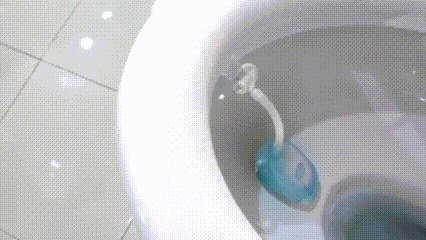
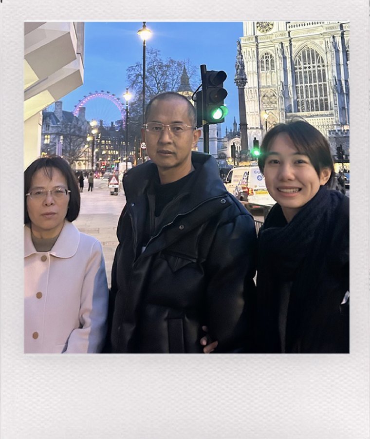
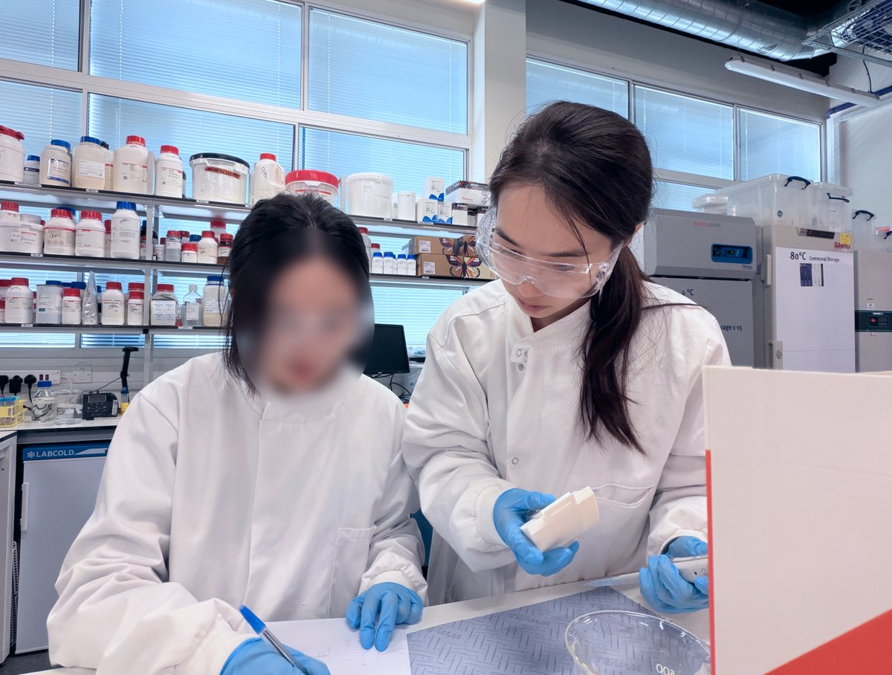
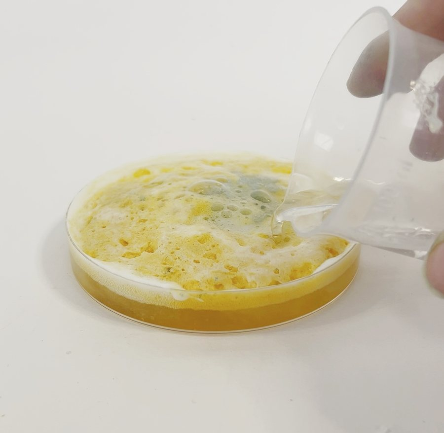
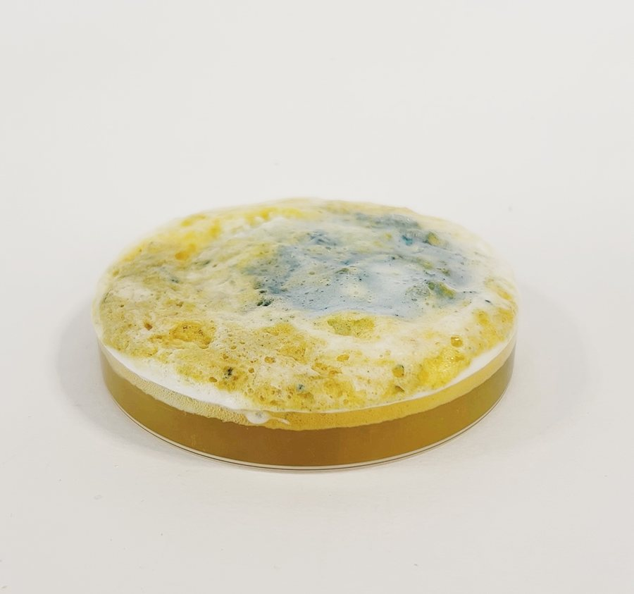
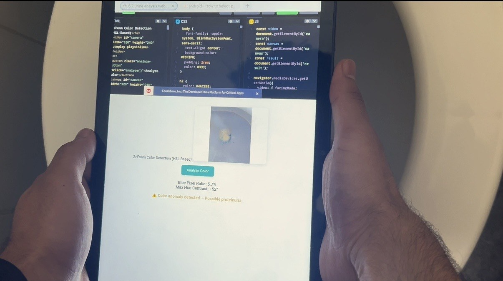
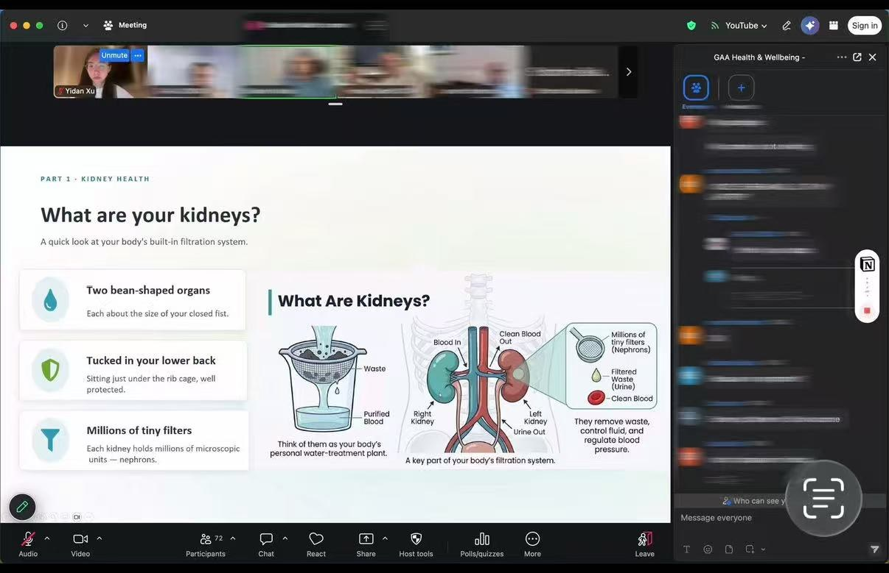
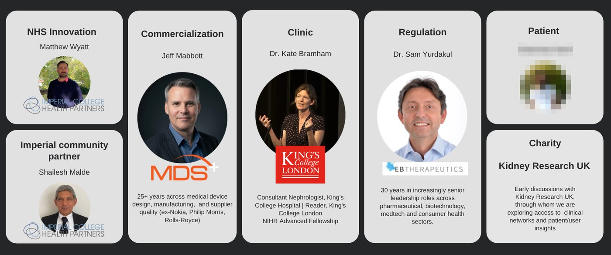
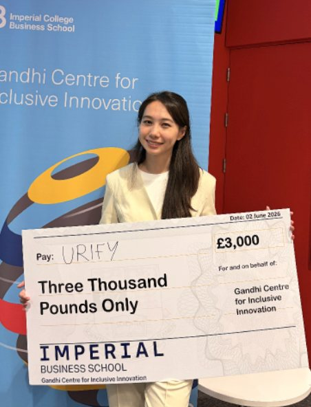

Why I started this
My father was diagnosed with chronic kidney disease at the middle stage. The doctors told him he had probably been ill for years already.
Nobody had missed anything. The disease gives you nothing to notice. That is when I started asking why a condition this common goes undiagnosed this often, and the answer turned out to be a design problem.

What I did on it
I founded Urify on my own and I am the designer on it. I ran the research, met the nephrologists, learned the chemistry and made the tablet myself, then built a team of engineers and medical collaborators around it and kept the direction.
The person is never in the room
This is the part that decided the product’s shape. I worked it out before I made anything.
The disease hides, so the person never goes
Chronic kidney disease is quiet for years. A person can lose a lot of kidney function and feel completely fine. No pain, no warning, nothing to point at.
That matters more than it sounds. People go to a doctor because something feels wrong. If nothing feels wrong, they do not go. The disease is easy enough to detect. The hard part is catching it, because the person is never in the room.
The disease is silent for years.
The person has no symptoms.
So they never go and get checked.
The screening never happens at all.
So the existing answers all miss
I went through what already exists. Each one works, and each one still fails, for the same reason. They all ask the person to do something new.
You have to buy one, and they are expensive. The people who buy them are already the people who watch their health. The person I need has not thought about their kidneys once.
You have to buy them, remember them, and use them. Before any of that, you have to suspect something is wrong. If you had a reason to suspect it, you would already have gone to a doctor.
You have to book it, travel to it, and give up a morning. People do that when they feel ill. This disease does not make you feel ill.
Even a free test posted to your door does not get used
I wanted to know how small the friction has to be before people stop, so I looked at the strongest case I could find. The NHS YouScreen trial in London posted free cervical screening kits to women who had not come in for their smear test. The kit is free. It arrives at the house. You take the sample yourself.
That number changed how I thought about the problem. Cost and access had already been removed here. What was left was the act itself: open it, do it, package it, post it. Four small steps, and around seven in eight people stopped.
So I stopped treating friction as something to reduce. Any friction at all is too much. The test has to ask for none.
The same trial makes the point twice
When a nurse handed the kit to a woman in person, at an appointment she was already at, uptake was far higher than when it arrived in the post. Nothing about the test changed. Only the moment it reached her did.
So the test has to hide inside a habit people already have
Almost everyone already buys something to clean the toilet. They buy it without a thought, use it without a thought, and replace it when it runs out. Nobody has to be persuaded.
So the product asks the person for nothing. They buy a toilet cleaner because they want a clean toilet, and the screening happens inside a week that stays exactly the same.
Four design problems
Deciding the shape was the easy half. These are the four things that had to be solved before the shape meant anything.
Making the signal readable
A colour change is only useful if somebody can read it. The chemistry gives you a reaction. Turning that into something a person recognises in their own bathroom, with no training and nothing to compare it to, was mine to solve.
I trained as a designer, so I had to become useful in a lab first. I learned the reaction the test depends on, then made and remade the tablet until the change was obvious to somebody who had never seen it before.



I designed a reference scale to go with it, so there is always something to check against.
Colour reference scale
to be added
Taking the judgement away from the person
Colour is hard to judge. Bathroom light changes it, and colour vision differs from person to person. Asking somebody to decide whether what they are looking at counts puts the hardest part of the test back on them.
So I built a prototype that reads it through a phone camera. It compares what it sees against the reference values and answers in words. I wrote it myself, so I could test the reading in a real bathroom and watch it fail where the light was bad.

Saying it without frightening anyone
The nephrologists told me what a false positive costs a patient. Somebody who reads one alarming result at home, with nobody to ask, can be frightened for weeks over nothing.
So the tablet reads again. It refreshes with each use and builds a picture over time, and it speaks up once the signal holds, and stays quiet the first time it appears. One unusual morning stays one unusual morning.
The wording carries the same job. The product reports what it saw and names the next step, and it leaves the diagnosis to a doctor.
The result wording
to be added
Getting clinicians to trust it
I arranged meetings with kidney specialists and asked what they would actually trust. They told me which marker matters, what a false positive costs a patient, and where a home test fits into a real care pathway. The product changed because of it, and the section above is what changed.
The clinical detail
The marker is albumin, a protein that leaks into the urine early in chronic kidney disease and shows up before a person feels anything. That is what makes screening for it possible at all.
The product reports, and the clinic diagnoses. A reading that holds is a prompt to go and get tested properly, and the specification I wrote for the team says it in those terms.
Taking it to a community before taking it to a clinic
Everything above says screening fails when it waits for people to come to it. So I went to where people already gather.
I partnered with the London GAA community, the Gaelic games clubs a large part of the city’s Irish population belongs to. Clubs meet every week, people turn up for training and for matches, and the trust is already there. That is a room I can walk into.
I designed the session as well as running it. Most of the 72 people in it had never heard of chronic kidney disease, so the first job was explaining what a kidney does before anybody saw a product.

I built an early-user community out of it: patients, charities, clinicians and a list of people willing to test. I wrote down what came back in the room, and it went into the requirements, so the tablet answers real objections.

How the pilot was scoped
I worked with the community on what a first trial could look like. Who takes part, how the tablets reach them, what a result should say, and what we would need to see before calling it a success.
Recruiting through the clubs means the people in it already know each other, which helps with the part every home-screening trial struggles with: getting the same person to use the thing more than once.
Working this way changed what my job was. It stopped being about designing an object and became about running a plan across people who do not report to me. Clinicians, chemists, engineers, a community organisation and its members. Everyone needed a different version of the same story.
What came of it
James Dyson Award UK Runner-up and Global Top 20. Second prize at Idea to Impact. Imperial We Innovate semi-finalist. A patent is in progress.
I built the business case that secured non-dilutive funding, and Kidney Research UK backed the work. I presented Urify to the NHS North West London ICHP team and at TEDx, and the world’s largest semiconductor manufacturer invited us to explore a pilot. Reuters and Dezeen covered it.


The tablet is still early and the trial is still to run. The part I am certain of is the shape of it. A screening that asks the person for nothing is the only kind that reaches somebody who feels completely well.
The six months, month by month
I started with a research question and no product. Six months later I was presenting to the NHS. Here is what happened in between, in order.
-
01
Research
I read the clinical literature on chronic kidney disease. The pattern was clear. The disease is quiet for years, and most people find out late. Screening exists, but it needs a clinic. So the gap sat in access, and detection was never the hard part.
-
02
I went and asked nephrologists
A medical product needs more than reading. I arranged meetings with kidney specialists and asked them what they would actually trust. They told me which marker matters, what a false positive costs a patient, and where a home test would fit in a real care pathway. That changed the product.
-
03
I learned the chemistry
I trained as a designer, so I had to become useful in a lab first. I learned the reaction the test depends on, then made and remade the tablet myself until the colour change was clear enough for a person to read without a chart.

My own process shots from the lab. Foam catalysis, then the reaction against artificial urine, then reading the colour. I ran this loop over and over until the green was obvious to someone who had never seen the test before. -
04
I built the team
One person cannot do medicine and engineering at once. I brought in medical and engineering collaborators, and I kept the direction. My job was to hold the product together while each of them went deep.
-
05
I built a camera app to read the result
Colour is hard for some people to judge. Lighting changes it, and so does eyesight. So I built a small companion app that reads the tablet through the phone camera. It uses computer vision to compare what it sees against the reference colours, and then it says in words what it found. The person gets a plain answer, and never has to make the call themselves.

The companion app running. It reads the test through the camera and returns a sentence: "Possible Proteinuria is detected". -
06
I presented to the NHS
At the end of the six months I presented Urify to the NHS North West London ICHP team. That is the audience that decides whether a screening idea is worth anything. Getting in front of them was the point of the whole six months.
Product management and strategy
- Product delivery: coordinated resources to lead a cross-functional team of medical and engineering collaborators, turning clinical research into a working product and business model
- Roadmap & direction: conducted market and business analysis to define product direction, feature prioritisation and user requirements. I decided what got built first, and what waited
- Research into requirements: turned interviews, community sessions and clinical conversations into specifications the team could build against, then iterated with them on each version
- Trade-offs: weighed quick wins against the slower work. Making the colour readable without a chart shipped early because it decided whether the product worked at all; the companion app came later, once the chemistry was stable
- User-centric design: built and engaged an early-user community together with patients, charities and NHS experts to drive agile product iteration
- Taking it out: prepared and delivered the material for each audience, from the NHS North West London ICHP team to a TEDx stage to the community sessions, and kept the story consistent across all of them
The product itself is live at urify.co.